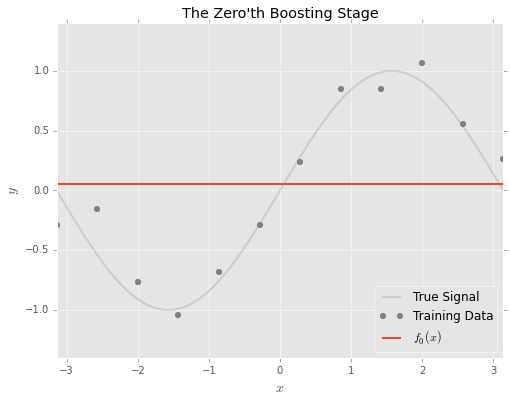
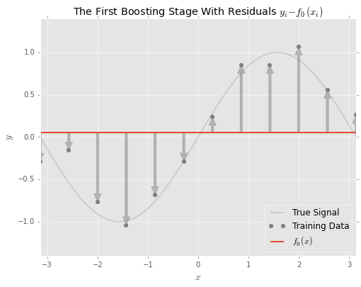

Introduction
There’s no shortage of machine learning hot takes on how the XGBoost gradient boosting framework continues to defy the no-free-lunch theorem by being perhaps the most versatile learning algorithm across tabular data applications.
Gradient boosting (GBM) packages such as XGBoost sequentially train a series of shallow trees, resulting in an ensemble model. In other words,
GBMs start with a single question, then add one question at a time. Training stops when adding another question would make the model too complex to explain or wouldn’t improve its performance.
(paraphrased from NVIDIA press release).
A final GBM model is the sum of \(B\) individual trees (‘learners’), trained up to the point of diminishing returns1:
\[ F(x)=\sum^B_{b=1}f_b\left(x\right) \]
This puts GBM squarely in the family of additive models2 such as generalized additive models. GBMs sequentially nudge an initial weak model towards a strong model by consecutively adding simple models to an ensemble.
A gradient boosting model is:
trained using gradient descent. Similar to neural networks, the GBM learning algorithm optimizes the model sequentially using a gradient descent formulation. However, instead of optimizing individual model parameters, the GBM algorithm directly optimizes the model itself. This is sometimes known as gradient descent in functional space.
a boosting model. In contrast with bagging learning algorithms such as random forests, boosting models take a different approach to model ensembling that uses simpler learners within an ensemble.
Bagging combines the wisdom of many individual learners to reduce variance (‘overfitting’). Resampling techniques ensure each tree in the ensemble is built differently. Learners in bagging ensembles are intentionally grown deep.
Boosting combines weaker learners (‘models’) to form a strong overall model by sequentially improving (‘boosting’) the model’s performance using newer learners. This reduces model bias.
Learning algorithm
Training a GBM begins with initializing a simple model \(f_0\), so that the model at iteration 0 is:
\[F_0( \textbf{x} )=f_0(\textbf{x})\]
where \(\textbf{x}\) denotes the feature input vector. \(f_0\) may be as simple as the average prediction. For a GBM modelling a single feature, the model may start off looking something like this3:

The idea behind gradient boosting is to adjust the model sequentially to ‘fix’ the errors.
- Where the actual values are above \(F_0\), the model should be adjusted upwards;
- Where the actual values are below \(F_0\), the model should be adjusted downwards;
The boosting approach to solving this problem is to fit a model to the errors \(\epsilon = y-F(\textbf{x})\) at every iteration. At every iteration, we add a model of the errors to fix the previous model’s mistakes.

Stated differently, the model at the first boosting stage is the sum of the initial model \(F_0\) and the model of the residuals \(f_1\):
\[F_1(\textbf{x})=F_0(\textbf{x})+f_1(\textbf{x})\]Intuitively, the residuals \(\epsilon\) indicate the direction in which the overall model should be nudged to get to the target value.
Gradient descent?
In practice, the residuals used to fit the learners are computed using the gradient of the loss function, and are also known as pseudoresiduals.
If we were to add the entirety of the model of the residuals \(f_1\):
\[F_1(\textbf{x})=F_0(\textbf{x})+f_1(\textbf{x})\]
then it may not be necessary to train for further iterations, since \(y=F_0(\textbf{x})+\epsilon\)4. So we slow down training by adding only a fraction \(\eta\) of the learner:
\[F_1(\textbf{x})=F_0(\textbf{x})+\eta f_1(\textbf{x})\]
\(\eta\) is known as the learning rate. It’s also known as a shrinkage parameter, since it shrinks the contribution of each learner to the ensemble.
Or more generally, for the \(b\)-th iteration:
\[F_b(\textbf{x})=F_{b-1}(\textbf{x})+\eta f_b(\textbf{x})\]
Notice how this parallels with gradient descent for neural networks, where the direction of adjustment for the \(j\)-th model parameter \(\theta_j\) is guided by the sign of the gradient:
\[\theta_{j} =\theta_{j}-\eta \frac{\delta}{\delta\theta_j}J(\theta)\]
where \(J(\theta)\) refers to the loss function.
With gradient boosting, the direction of the gradient is used to adjust the overall model directly instead of individual model parameters.
How many trees, then?
It follows that lowering the learning rate \(\eta\) generally requires more learners to build an optimal model. By slowing the speed of adjustment, the learning algorithm is more likely to converge, but a large ensemble may be required for an optimal model5.
An approach to determining the number of learners required is known as early stopping. Additional learners are added until the point of diminishing returns, where there is no noticeable performance gain for adding new trees.
Since the model is trained iteratively, it is possible to score the model at every iteration. The early_stopping_rounds argument in XGBoost checks the previous early_stopping_rounds for any improvement in the test score and trains the model for additional rounds only if improvements are observed.
Make sure to use separate sets of data for determining early stopping rounds and evaluating models.
Hyperparameters
A major challenge with tuning GBM models is knowing where to start from the large number of hyperparameters available. A great reference is this table from Laurae++ which lists the mapping between hyperparameters in XGBoost and LightGBM.
Apart from learning rate and the number of trees, I group XGBoost hyperparameters into three categories:
| Categories | Hyperparameters |
|---|---|
Explicit regularization Directly adding cost for model complexity into the objective function |
L1 (alpha) and L2 (lambda) regularization |
Tree growth Control tree growth. I refer to some of these (maximum + pruning) as implicit regularization hyperparameters. |
|
Sampling Inspired by bagging/random forests |
Row-wise and column-wise sampling |
For hyperparameter tuning, Optuna offers integration with XGBoost, Catboost and LightGBM to incorporate early stopping.
Implementations
There’s at least 4 major implementations of GBMs:
- XGBoost
- LightGBM
- Catboost
- sklearn.ensemble.HistGradientBoosting*
There’s no shortage of articles comparing these different implementations.
These libraries (in particular XGBoost and LightGBM) do borrow ideas from each other. For instance, I list down the major differences between XGBoost and LightGBM below, however these LightGBM features are also available in XGBoost as options:
| XGBoost | LightGBM | |
|---|---|---|
| Tree building method | Exact: enumerate all split candidates | Features are discretized/binned beforehand (hist) |
| Tree growth method | Depthwise/level-wise: trees are grown level by level. | Lossguide/leaf-wise: split based on best global loss |
Building interpretable GBMs
In some applications, it is necessary to consider additional measures to ensure the trustworthiness of a model.
Monotonic constraints
It may be useful to ensure that a GBM is constructed to align with certain ex ante expectations of how a feature is related to the target variable. Monotonic constraints ensure that a specified relationship is either strictly increasing or decreasing. See https://xgboost.readthedocs.io/en/stable/tutorials/monotonic.html for details.
Feature interaction constraints
In tree-based models, each additional level introduces interactions to the model. Interactions are where combinations of feature values matter to the model, and not just individual feature values. The additive structure of GBMs makes it possible to restrict interactions captured in a model by limiting the features used in each iteration.
- Explainable Boosting Machines train on one feature at a time and incorporate automatic detection of interactions, such that the resulting model can be directly interpreted by summing up across all trees.
- XGBoost allows users to specify which feature interactions are permitted. As an example, Scotiabank transforms XGBoost models trained with feature interaction constraints into a scorecard format for use in credit assessment.
Footnotes
adapted from https://bradleyboehmke.github.io/HOML/gbm.html↩︎
Visualizations from https://github.com/madrury/boosting-presentation/blob/master/Boosting-Presentation-Galvanize.ipynb↩︎
Additionally, \(\eta=1\) may result in the error function spiralling about the minimum like so: https://stats.stackexchange.com/questions/282544/why-does-reducing-the-learning-rate-quickly-reduce-the-error/282555#282555↩︎
This should not be taken as an indication of overfitting: the observation of double descent in neural networks suggests that extremely complex models do not necessarily overfit. However, limiting model complexity may be desirable for other reasons e.g. interpretability.↩︎